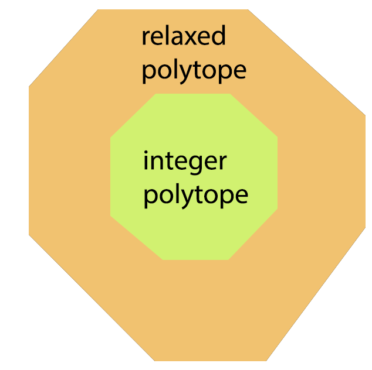

Lift-and-Project
The lift-and-project approach is a method to find inequalities that are valid for the ILP but are violated at the optimal
solution to the LP-relaxation. As a consequence, adding these inequalities to the LP-relaxation tightens the formulation
and strengthens the lower bounds in a branch-and-bound framework.
Integer Polytope: feasible region of ILP, convex hull of integer solutions
relaxed polytope: feasible region of LP-relaxation

Goal: We want to design a relaxed polytope that is as close to the integer polytope as possible.
Lift-and-Project methods give, starting from some initial relaxation, a hierarchy of relaxation where the final relaxation gives the integer
polytope (which takes exponential time to solve).
Relaxation inbetween the initial and final one take somewhere between polynomial and exponential time to solve.
Basic idea: try to simulate non-linear programming using linear programming by introducing auxiliary variables for
the non-linear terms.
Example: quadratic program for Vertex-Cover
\(0 \leq x_i \leq 1 \ \ \ \forall i \in V\)
\((1-x_i)(1-x_j) = 0 \ \ \ \) for each \(\{i, j\} \in E \)
To simulate this: introduce variables \(y_{ij} \geq 0\) with the intention that \(y_{ij}\) represents the product \(x_i x_j\).
This is the
lift step, which lifts the problem to a higher dimensional space.
To get a solution for the original problem from a solution to the new problem we simply project it back onto the variables \(x_i\)
(
project step). We may still end up with a relaxed polytope since we have no way of ensuring that
\(y_{ij} = x_i x_j\) in every solution of the lifted problem, but this relaxation can be no worse then the original LP-relaxation.
In Detail:
References:
[0]
https://www.cs.princeton.edu/courses/archive/spr05/cos598B/liftproj.pdf